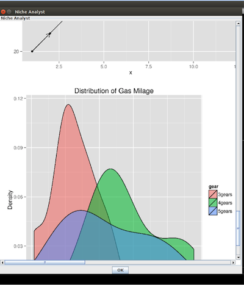

Test the availability of the functions in NicheA
1. Click About menu, -> Troubleshooting, then select a raster file (GeoTiff or ASC format) in your computer. If there is not an appropriate file on your computer, you can download a sample file via HERE.
2. If you see a dialog showed in Fig. 1, it means GDAL functions on your computer works well!
Figure 1. The dialog shows GDAL functions works well on this computer.
3. If you see two maps, ImageMagick convert command works well on your computer!
Figure 2. The dialog shows ImageMagick convert command works well on this computer.
4. If you see two diagrams, R runtime environment and R packages work well on your computer!
Figure 3. The dialog shows R runtime environment and R packages work well on this computer.
